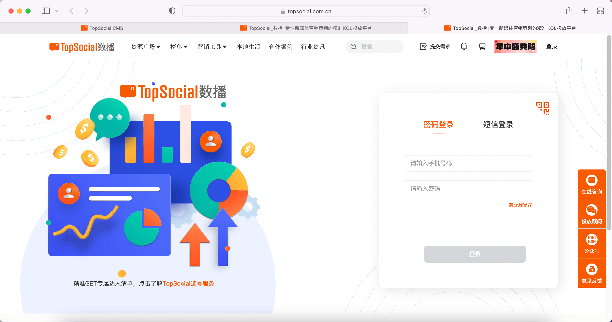

1、扫码登录：当账号注销后，使用扫码进行登录，需要走账号注册流程，即前往绑定手机号。
2、密码登录：使用密码登录后，则提示账号不存在，与原本一致。
3、短信登录：使用短信登录，提示尚未注册，与原本提示内容一致。
4、重新注册：若手机号已经注销，且还未过7天，在注册时获取验证码的时候进行拦截，提示：该手机号已注销，暂不可重新注册。（若使用移动端短信验证注册，也同样在获取验证码时进行拦截。）
5、使用弹窗进行登录注册，补充逻辑与上方一致